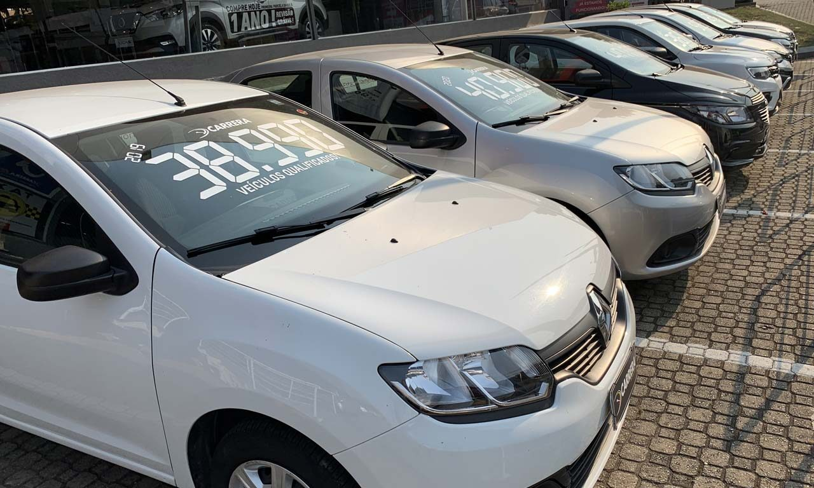
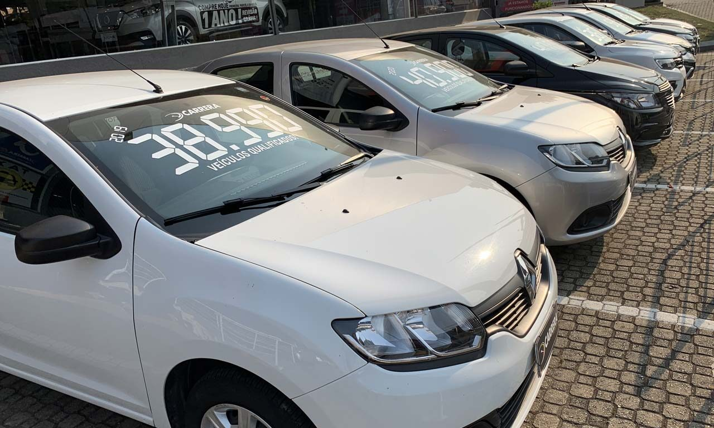

Elite Motors
Bem-vindo ao nosso site de carros!
 

Encontre os melhores carros novos e usados para venda.
Bem-vindo à "Rodas de Oportunidade" - Sua Melhor Escolha em Carros Usados!
Na Rodas de Oportunidade, oferecemos uma experiência de compra de carros usados única e confiável. Nosso compromisso é proporcionar a você uma ampla seleção de veículos de qualidade, desde sedans práticos até SUVs familiares e carros esportivos emocionantes.
Nossa equipe dedicada está aqui para ajudá-lo a encontrar o carro ideal que se adapta às suas necessidades e estilo de vida. Cada veículo em nosso showroom passa por uma cuidadosa inspeção para garantir sua segurança e satisfação. Além disso, oferecemos opções de financiamento flexíveis para tornar sua compra ainda mais acessível.
Localizados centralmente, na Rodas de Oportunidade você encontrará não apenas um lugar para comprar um carro, mas sim um parceiro comprometido com a sua satisfação. Visite-nos hoje mesmo e descubra por que somos a escolha preferida para quem busca qualidade, confiança e um serviço excepcional em carros usados.
Ver catálogo de carros